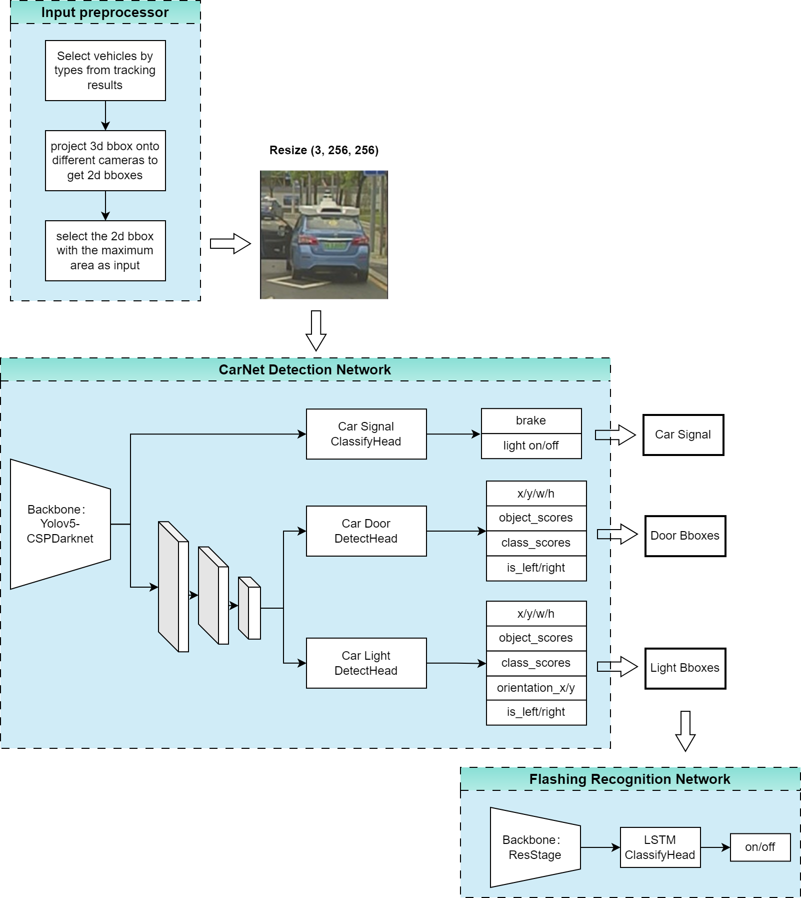
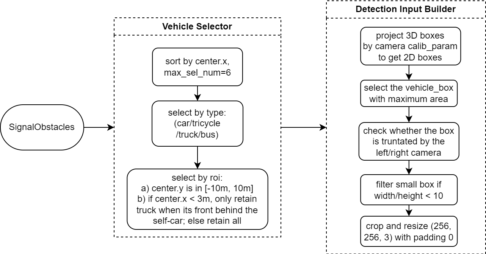
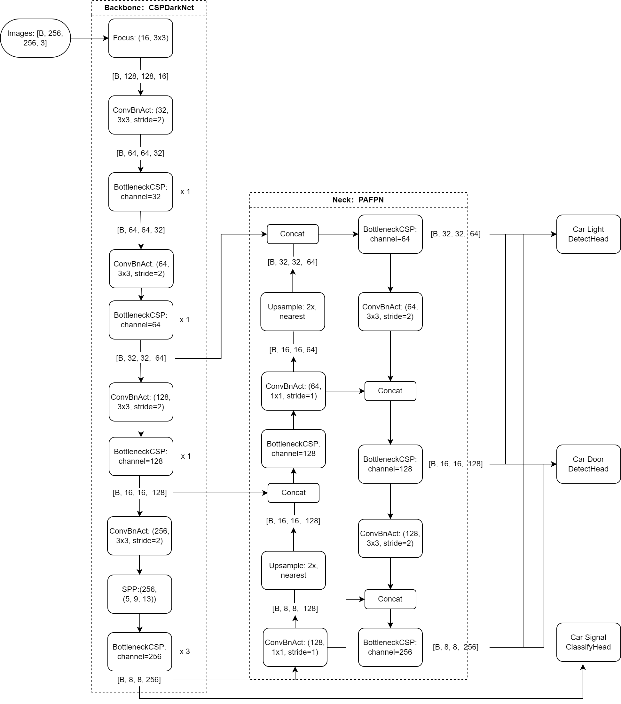
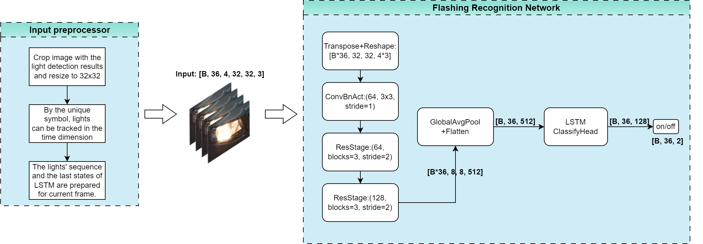

WR solution analysis
Carnet is divided into two tasks as a whole, which are Lamp light+door detection multi -task and Light flashing identification task :
After completing the door and light detection, The light flashing recognition network depends on the result of the lamp detection. The overall plan DAG is shown below ：
- 
Lamp light+door detection task:
Objective: Detect information from the lamps and door positions, categories, brake lights and other information in the target of a single car;
Network input:
Select the location of vehicle objects such as CAR and TRUCK from Tracking. Through camera parameters, they are reflected on the corresponding image and obtained the frame of the vehicle image;
Take the largest box in each camera, and expand 10% of the four directions in the four directions, maintain the length and width of Resize_AND_PADDING to 256*256;
Network output:
The light detection Head output multiple boxes, each box information is as follows:
Output 11 values, namely （x, y, w, h, confidence, class_id, orientation_x, orienation_y, is_left, is_right）；
Among them, X/Y/W/H is the upper left and high height of the BOX, the category ID of the Class_ID car lights, and the confidence is the probability of the classification prediction.
(Orientation_X, Orientation_Y) is the angle of the center to the center of the car to the center of the car center: SIN/COS value:
In the AOS processing, the angle will be calculated based on the BOX position of the lamp detection box. If the angle is from the Oriention_X/Y to the angle prediction results, the result is non-target vehicles Filtered;
The door detection Head output multiple boxes, each box information is as follows:
(X, Y, W, H, Confident, Class_id, LEFT/RIGHT), corresponding to the door frame, confidence, category ID (NORMAL_DOOR door, trunk_door backbone door), left and right positions;
Pay attention to the lack of MS5 CRRE door detection function;
There are 2 classification heads, which are specifically described as follows (the classification head is output for SoftMax, and use cross entropy loss):
brake: brake lights, on/off;
Light_ON: Whether the car has a lamp is turned on, combined with the light detection results with the light detection results in AOS; Refine prediction;
Pre -processing DAG: Because the text description of the front processing in Wenyuan document is too simple, analyzes Wenyuan AOS code to understand the real front processing process (please refer to ai/p8n/understanding/csdetect/preprocessor/)；
- 
Detection network DAG: The pre -processing of the detection network has been drawn in the overall solution DAG, so the following figure mainly draws the specific structure of the network.
- 
Light flashing identification task ：
Purpose: identify whether the lights are flashing;
Identification scheme DAG: The figure below includes the identification model input pre -processing and network specific structure.
illustrate:
Input [B, 36, 4, 32, 32, 3] 36 indicates the sequence length, 4 indicates the 4 -frame image stacked together at each moment, and the size of a single frame image is (3, 32, 32);
The output is SoftMAX two categories to determine whether the lights are flashing, and the LOSS uses a cross -entropy loss function;
Take RESSTAGE (64, 3x3, Stride = 2) as an example: 1st layer 64Channels 1x1 Stride = 1 convolution + one layer 64Channels 3X3 Stride = 2 convolution + one layer 64*4Channels 3X3 STRIDE = 1 convolution;
- 